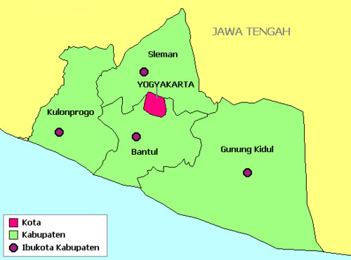

Welcome
Daerah istimewa Yogyakarta adalah daerah Istimewa setingkat Provinsi di Indonesia yang merupakan peleburan Negara Kesultanan Yogyakarta dan Negara Kadipaten Paku Alaman. Daerah Istimewa Yogyakartayang terletak di bagian selatan Pulau Jawa bagian tengah dan berbatasan dengan Provinsi Jawa Tengah dan Samudera Hindia. Daerah Istimewa yang memiliki luas 3.185,80 km2 ini terdiri atas satu kota dan empat kabupaten, yang terbagi lagi menjadi 78 kecamatan dan 438 desa/kelurahan. Menurut sensus penduduk 2010 memiliki jumlah penduduk 3.452.390 jiwa dengan proporsi 1.705.404 laki-laki dan 1.746.986 perempuan, serta memiliki kepadatan penduduk sebesar 1.084 jiwa per km2
